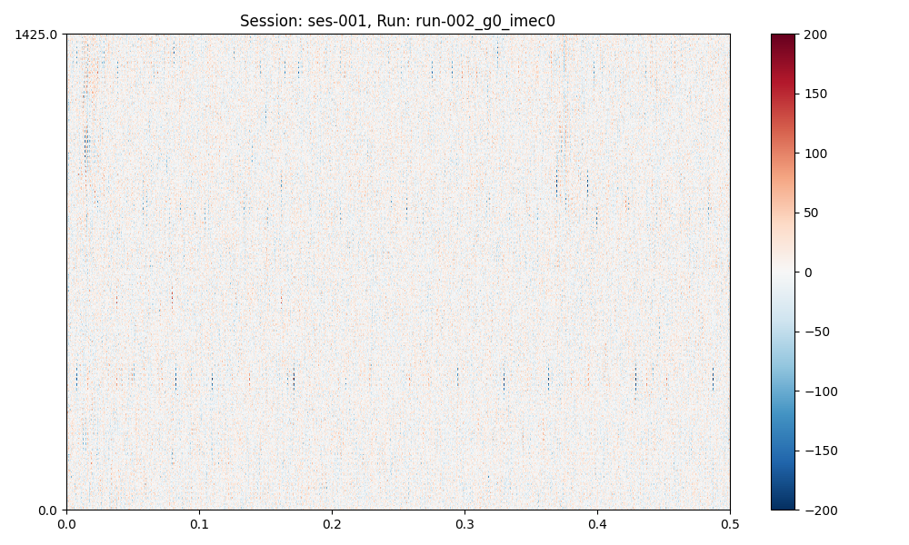
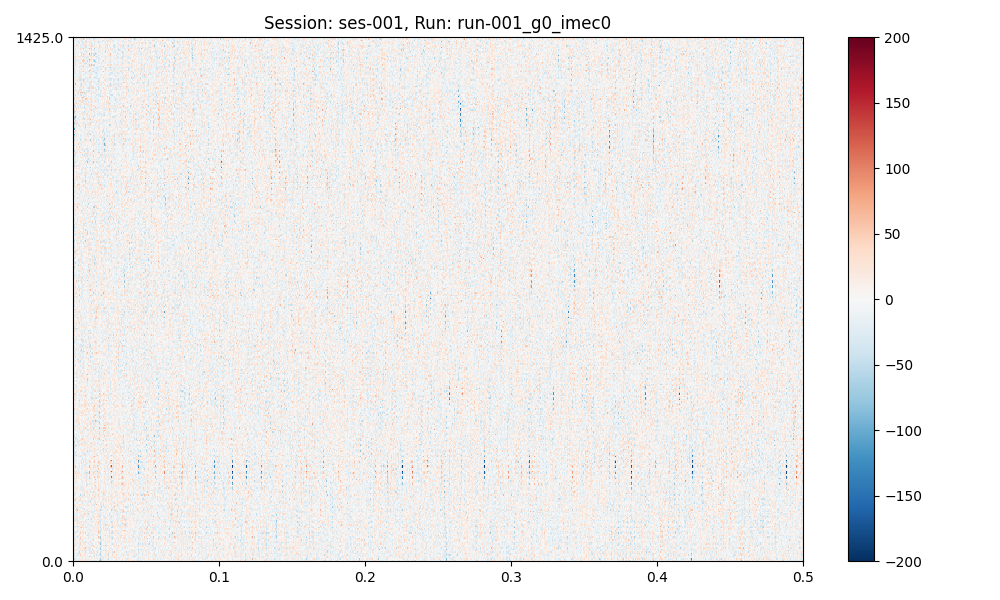

Note
Go to the end to download the full example code. or to run this example in your browser via Binder
How to preprocess a session#
Note
This is a quick how-to on session preprocessing. See here for a long-form tutorial.
if __name__ == "__main__": # for multiprocessing
import spikewrap as sw
# We will use these configs
sw.show_configs("neuropixels+kilosort2_5")
# Now we will preprocess and save all sesssion data.
session = sw.Session(
subject_path=sw.get_example_data_path() / "rawdata" / "sub-001",
session_name="ses-001",
file_format="spikeglx", # or "openephys"
run_names="all"
)
session.load_raw_data()
session.preprocess(
configs="neuropixels+kilosort2_5",
per_shank=True,
concat_runs=True
)
plots = session.plot_preprocessed(
show=True,
time_range=(0, 0.5),
show_channel_ids=False, # also, "mode"="map" or "line"
)
session.save_preprocessed(overwrite=True, n_jobs=6, slurm=False)

The preprocessing options are: {
"1": [
"bandpass_filter",
{
"freq_max": 6000,
"freq_min": 300
}
],
"2": [
"common_reference",
{
"operator": "median",
"reference": "global"
}
]
}
The sorting options are: {
"kilosort2_5": {
"car": false,
"freq_min": 150
}
}
Loading runs from session path: /home/runner/work/spikewrap/spikewrap/spikewrap/examples/example_tiny_data/spikeglx/rawdata/sub-001
Loading run: run-001_g0_imec0
Loading data from path: /home/runner/work/spikewrap/spikewrap/spikewrap/examples/example_tiny_data/spikeglx/rawdata/sub-001/ses-001/ephys/run-001_g0_imec0
Loading run: run-002_g0_imec0
Loading data from path: /home/runner/work/spikewrap/spikewrap/spikewrap/examples/example_tiny_data/spikeglx/rawdata/sub-001/ses-001/ephys/run-002_g0_imec0
The preprocessing options are: {
"1": [
"bandpass_filter",
{
"freq_max": 6000,
"freq_min": 300
}
],
"2": [
"common_reference",
{
"operator": "median",
"reference": "global"
}
]
}
Loading data from path: /home/runner/work/spikewrap/spikewrap/spikewrap/examples/example_tiny_data/spikeglx/rawdata/sub-001/ses-001/ephys/run-001_g0_imec0
Loading data from path: /home/runner/work/spikewrap/spikewrap/spikewrap/examples/example_tiny_data/spikeglx/rawdata/sub-001/ses-001/ephys/run-002_g0_imec0
Concatenating runs in the following order:['run-001_g0_imec0', 'run-002_g0_imec0']
Split run: concat_run by shank. There are 2 shanks.
Saving data for: concat_run...
`overwrite=True`, so deleting all files and folders (except for slurm_logs) at the path:
/home/runner/work/spikewrap/spikewrap/spikewrap/examples/example_tiny_data/spikeglx/derivatives/sub-001/ses-001/ephys/concat_run
Saving sync channel for: concat_run...
write_binary_recording
n_jobs=4 - samples_per_chunk=60,000 - chunk_memory=21.97 MiB - total_memory=87.89 MiB - chunk_duration=2.00s
write_binary_recording: 0%| | 0/1 [00:00<?, ?it/s]
write_binary_recording: 100%|██████████| 1/1 [00:00<00:00, 3.17it/s]
write_binary_recording: 100%|██████████| 1/1 [00:00<00:00, 3.17it/s]
write_binary_recording
n_jobs=4 - samples_per_chunk=60,000 - chunk_memory=21.97 MiB - total_memory=87.89 MiB - chunk_duration=2.00s
write_binary_recording: 0%| | 0/1 [00:00<?, ?it/s]
write_binary_recording: 100%|██████████| 1/1 [00:00<00:00, 3.32it/s]
write_binary_recording: 100%|██████████| 1/1 [00:00<00:00, 3.31it/s]
We could run again with different configs and multiprocessing:
if __name__ == "__main__":
pp_steps = {
"1": ["bandpass_filter", {"freq_min": 300, "freq_max": 6000}],
"2": ["common_reference", {"operator": "median"}],
}
session.preprocess(configs=pp_steps, per_shank=False, concat_runs=False)
session.plot_preprocessed(
show=True,
time_range=(0, 0.5),
show_channel_ids=False, # also, "mode"="map" or "line"
)
session.save_preprocessed(overwrite=True, n_jobs=6, slurm=False)
- 
- 
The preprocessing options are: {
"1": [
"bandpass_filter",
{
"freq_max": 6000,
"freq_min": 300
}
],
"2": [
"common_reference",
{
"operator": "median"
}
]
}
Loading data from path: /home/runner/work/spikewrap/spikewrap/spikewrap/examples/example_tiny_data/spikeglx/rawdata/sub-001/ses-001/ephys/run-001_g0_imec0
Loading data from path: /home/runner/work/spikewrap/spikewrap/spikewrap/examples/example_tiny_data/spikeglx/rawdata/sub-001/ses-001/ephys/run-002_g0_imec0
Saving data for: run-001_g0_imec0...
`overwrite=True`, so deleting all files and folders (except for slurm_logs) at the path:
/home/runner/work/spikewrap/spikewrap/spikewrap/examples/example_tiny_data/spikeglx/derivatives/sub-001/ses-001/ephys/run-001_g0_imec0
Saving sync channel for: run-001_g0_imec0...
write_binary_recording
n_jobs=4 - samples_per_chunk=60,000 - chunk_memory=43.95 MiB - total_memory=175.78 MiB - chunk_duration=2.00s
write_binary_recording: 0%| | 0/1 [00:00<?, ?it/s]
write_binary_recording: 100%|██████████| 1/1 [00:00<00:00, 3.48it/s]
write_binary_recording: 100%|██████████| 1/1 [00:00<00:00, 3.47it/s]
Saving data for: run-002_g0_imec0...
`overwrite=True`, so deleting all files and folders (except for slurm_logs) at the path:
/home/runner/work/spikewrap/spikewrap/spikewrap/examples/example_tiny_data/spikeglx/derivatives/sub-001/ses-001/ephys/run-002_g0_imec0
Saving sync channel for: run-002_g0_imec0...
write_binary_recording
n_jobs=4 - samples_per_chunk=60,000 - chunk_memory=43.95 MiB - total_memory=175.78 MiB - chunk_duration=2.00s
write_binary_recording: 0%| | 0/1 [00:00<?, ?it/s]
write_binary_recording: 100%|██████████| 1/1 [00:00<00:00, 3.00it/s]
write_binary_recording: 100%|██████████| 1/1 [00:00<00:00, 3.00it/s]
Total running time of the script: (0 minutes 3.846 seconds)